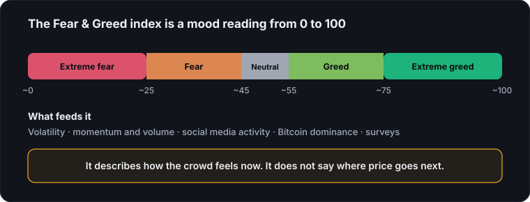

The Fear & Greed index (often written "fear and greed index") — the number CryptoBolt pulls from Alternative.me into the Global Market Pulse strip — compresses a handful of inputs (volatility, momentum and volume, social media activity, Bitcoin dominance, and search trends, with survey data when the provider includes it) into a single 0–100 score. Near 0 is "extreme fear," near 100 is "extreme greed."
It's easy to treat that number like a trade signal: buy the fear, sell the greed. Sometimes that works. Often it doesn't, because the index describes the current mood of the market, not where it's headed next. Extreme fear can sit at extreme fear for weeks during a genuine downtrend. Extreme greed can grind higher for months in a strong bull run before anything mean-reverts.

How the index is actually calculated
The score blends several inputs into one number: price volatility relative to recent averages, momentum and trading volume versus their moving averages, social media activity, Bitcoin's dominance of total market cap, and search trends, plus survey data when it is included. No single input dominates — a sharp volatility spike can pull the score toward fear even while price is flat, and a rush of momentum with rising volume can pull it toward greed before price has moved much at all. That's part of why the number can feel disconnected from price action on any given day.
What "extreme fear" actually means in practice: it's the market pricing in unusually high uncertainty or downside risk, not a guarantee that a bottom is near. It shows up during sharp selloffs, sudden volatility spikes, and periods of heavy negative sentiment — sometimes right before a reversal, sometimes in the middle of a downtrend that has much further to fall. The reading tells you the crowd is scared; it doesn't tell you whether the crowd is right.
What it's actually useful for
Treat it as context, not a trigger. If price is testing a level you already care about and sentiment is at an extreme, that's a data point worth weighing alongside trend, volume, and funding — not a reason to act on its own.
Before leaning on a reading, run through three quick checks:
- Trend: does the daily trend agree with the mood, or is price already turning against it?
- Positioning: does funding and open interest show one side crowded, or is positioning calm?
- Location: is price at a level that already matters, such as a round number? CryptoBolt's AI research pass uses it the same way: as one input folded into a broader read, next to multi-timeframe trend and funding-rate positioning, never as the deciding factor by itself.
The most reliable use case is spotting when the crowd is unusually one-sided. That's information. What you do with it is still yours to decide.
Where to go next
- Crypto funding rates explained: a positioning signal to pair with sentiment.
- Why round numbers act like support and resistance: where price tends to react.
- Why CryptoBolt doesn't predict crypto prices: how to use context instead of forecasts.
- Glossary: definitions for volatility, dominance and other terms used here.